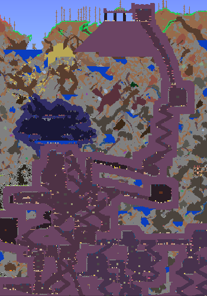

World
The worlds of Terraria are dangerous and it is your goal to explore every nook and crany and find what treasure awaits.
Biomes
Many different biomes litter the land of Terraria. Common ones like the Snow, Desert or Jungle biomes contain deeper more dangerous underground areas. Be careful when explore there, but are as many dangerous creeping around dark corners as there ores and treasure to be found.
Evil Biomes & The Dungeon
There are also the Evil Biomes, you have chosen which one you picked or picked randomly when you first made the world. There is the purple Corruption and the red Crimson. Early on they are filled with dangerous flying enemies that will try to chase you. They both have unique landscape, enemies, loot, and even bosses. The Corruption looks like a giant worm dug through its land, and there are many worm like enemies that apear their. While the Crimson is more straightforward with cave entrances and a large area full of creatures underneath.
The Dungeon is unique as you have to beat a boss, Skeletron, before you can enter it. It looks like an underground castle filled with skeleton themed enemies trying to get you. More foes spawn as well because of the blue candle lights that surround the dungeon which increases enemy spawn rate. So be quick when your exploring! Find slimes who contain golden keys, you will need them to open the chests littered around the dungeon and get amazing weapons and loot.

The Underworld
The ever infamous Underworld biome located at the bottom of the world. It's one of most dangerous place to be, as it is filled with lava. Make sure you are prepared to explore this dangerous place! I recommend you stall going this deep down until you've explored the Dungeon, upgraded your health by finding several Heart Crystal which are littered around the world, and getting sufficiently geared up. Make sure to raid the buildings that circle the center of The Underworld it is filled with good chests with loot that you won't have to miss. However they are locked! So must find the Shadow Key in one of the chests located in the Dungeon. This is also where you defeat the Wall of Flesh the last boss you fight before you start Hardmode.